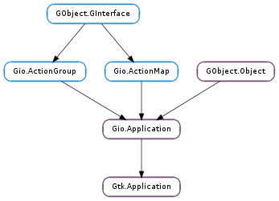

| static | new(application_id, flags) |
| add_accelerator(accelerator, action_name, parameter) | |
| add_window(window) | |
| get_active_window() | |
| get_app_menu() | |
| get_menubar() | |
| get_window_by_id(id) | |
| get_windows() | |
| inhibit(window, flags, reason) | |
| is_inhibited(flags) | |
| remove_accelerator(action_name, parameter) | |
| remove_window(window) | |
| set_app_menu(app_menu) | |
| set_menubar(menubar) | |
| uninhibit(cookie) |
| Name | Type | Flags | Description |
|---|---|---|---|
| active-window | Gtk.Window | r | The window which most recently had focus |
| Gio.MenuModel | r/w | The Gio.MenuModel for the application menu | |
| Gio.MenuModel | r/w | The Gio.MenuModel for the menubar | |
| register-session | bool | r/w | Register with the session manager |
| Name | Parameters | Return | Description |
|---|---|---|---|
| window-added | Gtk.Window | Emitted when a Gtk.Window is added to application through Gtk.Application.add_window (). | |
| window-removed | Gtk.Window | Emitted when a Gtk.Window is removed from application, either as a side-effect of being destroyed or explicitly through Gtk.Application.remove_window (). |
| Name | Type | Access |
|---|---|---|
| parent | Gio.Application | r |
Bases: Gio.Application
Gtk.Application is a class that handles many important aspects of a GTK+ application in a convenient fashion, without enforcing a one-size-fits-all application model.
Currently, Gtk.Application handles GTK+ initialization, application uniqueness, session management, provides some basic scriptability and desktop shell integration by exporting actions and menus and manages a list of toplevel windows whose life-cycle is automatically tied to the life-cycle of your application.
While Gtk.Application works fine with plain Gtk.Windows, it is recommended to use it together with Gtk.ApplicationWindow.
When GDK threads are enabled, Gtk.Application will acquire the GDK lock when invoking actions that arrive from other processes. The GDK lock is not touched for local action invocations. In order to have actions invoked in a predictable context it is therefore recommended that the GDK lock be held while invoking actions locally with Gio.ActionGroup.activate_action (). The same applies to actions associated with Gtk.ApplicationWindow and to the ‘activate’ and ‘open’ Gio.Application methods.
To set an application menu for a Gtk.Application, use Gtk.Application.set_app_menu (). The Gio.MenuModel that this function expects is usually constructed using Gtk.Builder, as seen in the following example. To specify a menubar that will be shown by Gtk.ApplicationWindows, use Gtk.Application.set_menubar (). Use the base Gio.ActionMap interface to add actions, to respond to the user selecting these menu items.
GTK+ displays these menus as expected, depending on the platform the application is running on.
A simple application FIXME: MISSING XINCLUDE CONTENT
Gtk.Application optionally registers with a session manager of the users session (if you set the Gtk.Application :register-session property) and offers various functionality related to the session life-cycle.
An application can block various ways to end the session with the Gtk.Application.inhibit () function. Typical use cases for this kind of inhibiting are long-running, uninterruptible operations, such as burning a CD or performing a disk backup. The session manager may not honor the inhibitor, but it can be expected to inform the user about the negative consequences of ending the session while inhibitors are present.
| Parameters: |
|
|---|---|
| Returns: | a new Gtk.Application instance |
| Return type: |
Creates a new Gtk.Application instance.
When using Gtk.Application, it is not necessary to call Gtk.init () manually. It is called as soon as the application gets registered as the primary instance.
Concretely, Gtk.init () is called in the default handler for the Gio.Application ::startup signal. Therefore, Gtk.Application subclasses should chain up in their Gio.Application :startup handler before using any GTK+ API.
Note that commandline arguments are not passed to Gtk.init (). All GTK+ functionality that is available via commandline arguments can also be achieved by setting suitable environment variables such as G_DEBUG, so this should not be a big problem. If you absolutely must support GTK+ commandline arguments, you can explicitly call Gtk.init () before creating the application instance.
If non-None, the application ID must be valid. See Gio.Application.id_is_valid ().
If no application ID is given then some features (most notably application uniqueness) will be disabled. A null application ID is only allowed with GTK+ 3.6 or later.
| Parameters: |
|
|---|
Installs an accelerator that will cause the named action to be activated when the key combination specificed by accelerator is pressed.
accelerator must be a string that can be parsed by Gtk.accelerator_parse (), e.g. “<Primary>q” or “<Control><Alt>p”.
action_name must be the name of an action as it would be used in the app menu, i.e. actions that have been added to the application are referred to with an “app.” prefix, and window-specific actions with a “win.” prefix.
Gtk.Application also extracts accelerators out of ‘accel’ attributes in the Gio.MenuModels passed to Gtk.Application.set_app_menu () and Gtk.Application.set_menubar (), which is usually more convenient than calling this function for each accelerator.
| Parameters: | window (Gtk.Window) – a Gtk.Window |
|---|
Adds a window to application.
This call is equivalent to setting the Gtk.Window :application property of window to application.
Normally, the connection between the application and the window will remain until the window is destroyed, but you can explicitly remove it with Gtk.Application.remove_window ().
GTK+ will keep the application running as long as it has any windows.
| Returns: | the active window |
|---|---|
| Return type: | Gtk.Window |
Gets the “active” window for the application.
The active window is the one that was most recently focused (within the application). This window may not have the focus at the moment if another application has it – this is just the most recently-focused window within this application.
| Returns: | the application menu of application |
|---|---|
| Return type: | Gio.MenuModel |
Returns the menu model that has been set with Gtk.Application.set_app_menu ().
| Returns: | the menubar for windows of application |
|---|---|
| Return type: | Gio.MenuModel |
Returns the menu model that has been set with Gtk.Application.set_menubar ().
| Parameters: | id (int) – an identifier number |
|---|---|
| Returns: | the window with ID id, or None if there is no window with this ID |
| Return type: | Gtk.Window |
Returns the Gtk.ApplicationWindow with the given ID.
| Returns: | a GLib.List of Gtk.Window |
|---|---|
| Return type: | [Gtk.Window] |
Gets a list of the Gtk.Windows associated with application.
The list is sorted by most recently focused window, such that the first element is the currently focused window. (Useful for choosing a parent for a transient window.)
The list that is returned should not be modified in any way. It will only remain valid until the next focus change or window creation or deletion.
| Parameters: |
|
|---|---|
| Returns: | A non-zero cookie that is used to uniquely identify this request. It should be used as an argument to Gtk.Application.uninhibit () in order to remove the request. If the platform does not support inhibiting or the request failed for some reason, 0 is returned. |
| Return type: |
Inform the session manager that certain types of actions should be inhibited. This is not guaranteed to work on all platforms and for all types of actions.
Applications should invoke this method when they begin an operation that should not be interrupted, such as creating a CD or DVD. The types of actions that may be blocked are specified by the flags parameter. When the application completes the operation it should call Gtk.Application.uninhibit () to remove the inhibitor. Note that an application can have multiple inhibitors, and all of the must be individually removed. Inhibitors are also cleared when the application exits.
Applications should not expect that they will always be able to block the action. In most cases, users will be given the option to force the action to take place.
Reasons should be short and to the point.
If window is given, the session manager may point the user to this window to find out more about why the action is inhibited.
| Parameters: | flags (Gtk.ApplicationInhibitFlags) – what types of actions should be queried |
|---|---|
| Returns: | True if any of the actions specified in flags are inhibited |
| Return type: | bool |
Determines if any of the actions specified in flags are currently inhibited (possibly by another application).
| Parameters: |
|
|---|
Removes an accelerator that has been previously added with Gtk.Application.add_accelerator ().
| Parameters: | window (Gtk.Window) – a Gtk.Window |
|---|
Remove a window from application.
If window belongs to application then this call is equivalent to setting the Gtk.Window :application property of window to None.
The application may stop running as a result of a call to this function.
| Parameters: | app_menu (Gio.MenuModel or None) – a Gio.MenuModel, or None |
|---|
Sets or unsets the application menu for application.
This can only be done in the primary instance of the application, after it has been registered. Gio.Application :startup is a good place to call this.
The application menu is a single menu containing items that typically impact the application as a whole, rather than acting on a specific window or document. For example, you would expect to see “Preferences” or “Quit” in an application menu, but not “Save” or “Print”.
If supported, the application menu will be rendered by the desktop environment.
Use the base Gio.ActionMap interface to add actions, to respond to the user selecting these menu items.
| Parameters: | menubar (Gio.MenuModel or None) – a Gio.MenuModel, or None |
|---|
Sets or unsets the menubar for windows of application.
This is a menubar in the traditional sense.
This can only be done in the primary instance of the application, after it has been registered. Gio.Application :startup is a good place to call this.
Depending on the desktop environment, this may appear at the top of each window, or at the top of the screen. In some environments, if both the application menu and the menubar are set, the application menu will be presented as if it were the first item of the menubar. Other environments treat the two as completely separate – for example, the application menu may be rendered by the desktop shell while the menubar (if set) remains in each individual window.
Use the base Gio.ActionMap interface to add actions, to respond to the user selecting these menu items.
| Parameters: | cookie (int) – a cookie that was returned by Gtk.Application.inhibit () |
|---|
Removes an inhibitor that has been established with Gtk.Application.inhibit (). Inhibitors are also cleared when the application exits.